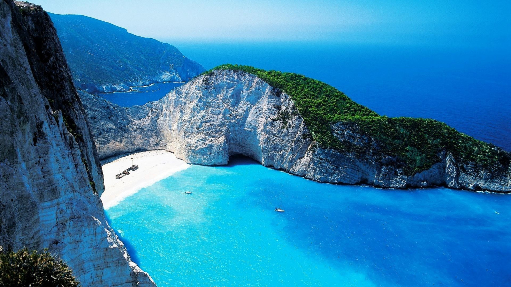
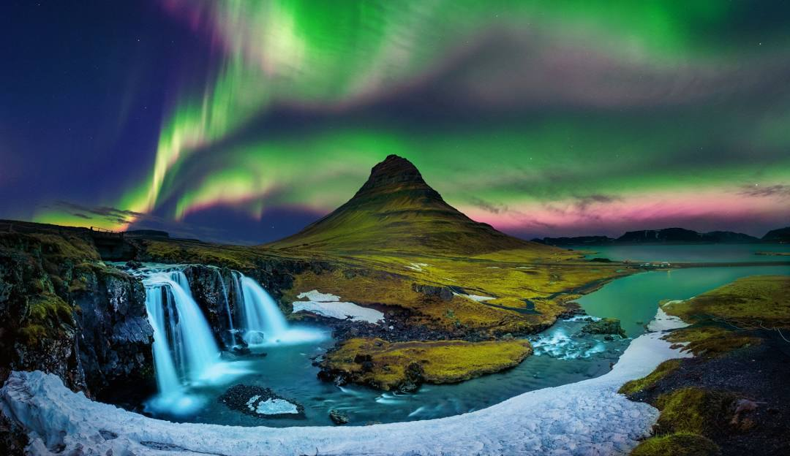

Nos Destinations Populaire

Aurore Boréale Islande
Lors d’une belle nuit dégagée, au cœur de l’hiver islandais,
le voyageur de passage
en Islande aura peut être le privilège
(et la chance !) d’assister à un de plus
beaux phénomènes
naturels de la planète : les aurores boréales.
Profitez d’un voyage dédié aux aurores boréales, accompagné
d’un guide expert
de l’Islande pour tenter votre chance et
assister à ce spectacle mythique des
hautes latitudes.
Une expérience à vivre au moins une fois…